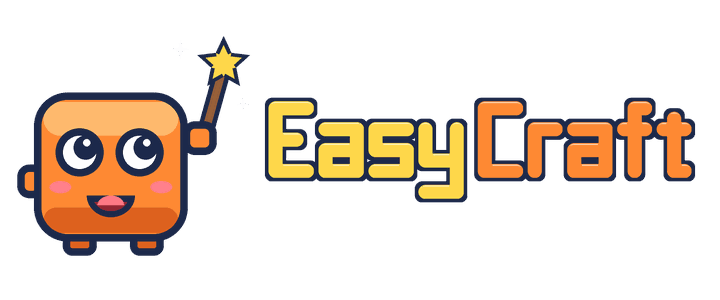

Your browser does not support the canvas tag.
EasyCraft needs JavaScript to run in the browser.

✦
✦
✦
✦
Made by Alexander Pirveli
Getting your world ready…
PLAY
Add EasyCraft to this device
Added! Next time, just tap the EasyCraft icon.
The first visit takes a moment. Next time EasyCraft starts right away.
Turn your phone sideways to play!
Tap the white box to type
Done
Put EasyCraft on your Home Screen
Got it!
✕ CLOSE